首页 > 编程笔记
对WebSocket的理解（非常透彻）
平时我们打开网页，比如购物网站某宝。都是点一下「列表商品」，跳转一下网页就到了「商品详情」。
从 HTTP 协议的角度来看，就是点一下网页上的某个按钮，前端发一次 HTTP请 求，网站返回一次 HTTP 响应。这种由客户端主动请求，服务器响应的方式也满足大部分网页的功能场景。
但有没有发现，这种情况下，服务器从来就「不会主动」给客户端发一次消息。就像你喜欢的女生从来不会主动找你一样。
但如果现在，你在刷网页的时候「右下角」突然弹出一个小广告，提示你【一个人在家偷偷才能玩哦】。
求知，好学，勤奋，这些刻在你 DNA 里的东西都动起来了。
你点开后发现，长相平平无奇的古巨基提示你"道士 9 条狗，全服横着走"，影帝渣渣辉老师跟你说"系兄弟就来砍我"。
来都来了，你就选了个角色进到了游戏界面里。
这时候，上来就是一个小怪，从远处走来，然后疯狂拿木棒子抽你。
你全程没点任何一次鼠标。服务器就自动将怪物的移动数据和攻击数据源源不断发给你了。
这….太暖心了。
感动之余，问题就来了，像这种看起来服务器主动发消息给客户端的场景，是怎么做到的？
在真正回答这个问题之前，我们先来聊下一些相关的知识背景。
最常见的解决方案是，网页的前端代码里不断定时发 HTTP 请求到服务器，服务器收到请求后给客户端响应消息。
这其实时一种「伪」服务器推的形式。
它其实并不是服务器主动发消息到客户端，而是客户端自己不断偷偷请求服务器，只是用户无感知而已。
用这种方式的场景也有很多，最常见的就是扫码登录。
比如，某信公众号平台，登录页面二维码出现之后，前端网页根本不知道用户扫没扫，于是不断去向后端服务器询问，看有没有人扫过这个码。而且是以大概 1 到 2 秒的间隔去不断发出请求，这样可以保证用户在扫码后能在 1 到 2 秒内得到及时的反馈，不至于等太久。
使用起来的体验就是，二维码出现后，手机扫一扫，然后在手机上点个确认，这时候卡顿等个 1~2 秒，页面才跳转。
那么问题又来了，有没有更好的解决方案？
有，而且实现起来成本还非常低。
如果我们的 HTTP 请求将超时设置的很大，比如 30 秒，在这 30 秒内只要服务器收到了扫码请求，就立马返回给客户端网页。如果超时，那就立马发起下一次请求。
这样就减少了 HTTP 请求的个数，并且由于大部分情况下，用户都会在某个 30 秒的区间内做扫码操作，所以响应也是及时的。
比如，百度云网盘就是这么干的。所以你会发现一扫码，手机上点个确认，电脑端网页就秒跳转，体验很好。
像这种发起一个请求，在较长时间内等待服务器响应的机制，就是所谓的长训轮机制。我们常用的消息队列 RocketMQ 中，消费者去取数据时，也用到了这种方式。
像这种，在用户不感知的情况下，服务器将数据推送给浏览器的技术，就是所谓的服务器推送技术，它还有个毫不沾边的英文名，comet 技术，大家听过就好。
上面提到的两种解决方案（不断轮询和长轮询），本质上，其实还是客户端主动去取数据。
对于像扫码登录这样的简单场景还能用用。但如果是网页游戏呢，游戏一般会有大量的数据需要从服务器主动推送到客户端。
这就得说下 WebSocket 了。
而现在使用最广泛的HTTP/1.1，也是基于TCP协议的，同一时间里，客户端和服务器只能有一方主动发数据，这就是所谓的半双工。
也就是说，好好的全双工 TCP，被 HTTP/1.1 用成了半双工。
为什么？
这是由于 HTTP 协议设计之初，考虑的是看看网页文本的场景，能做到客户端发起请求再由服务器响应，就够了，根本就没考虑网页游戏这种，客户端和服务器之间都要互相主动发大量数据的场景。
所以，为了更好的支持这样的场景，我们需要另外一个基于TCP的新协议。
于是新的应用层协议WebSocket就被设计出来了。
大家别被这个名字给带偏了。虽然名字带了个socket，但其实 socket 和 WebSocket 之间，就跟雷峰和雷峰塔一样，二者接近毫无关系。
为了兼容这些使用场景。浏览器在 TCP 三次握手建立连接之后，都统一使用 HTTP 协议先进行一次通信。
如果此时是普通的 HTTP 请求，那后续双方就还是老样子继续用普通 HTTP 协议进行交互，这点没啥疑问。
如果这时候是想建立 WebSocket 连接，就会在 HTTP 请求里带上一些特殊的header 头，如下：
如果服务器正好支持升级成 WebSocket 协议，就会走 WebSocket 握手流程，同时根据客户端生成的 base64 码，用某个公开的算法变成另一段字符串，放在 HTTP 响应的 Sec-WebSocket-Accept 头里，同时带上101状态码，发回给浏览器。HTTP 的响应如下：
之后，浏览器也用同样的公开算法将base64码转成另一段字符串，如果这段字符串跟服务器传回来的字符串一致，那验证通过。
就这样经历了一来一回两次 HTTP 握手，WebSocket 就建立完成了，后续双方就可以使用 webscoket 的数据格式进行通信了。
上面这张图，注意画了红框的第 2445 行报文，是 WebSocket 的第一次握手，意思是发起了一次带有特殊 Header 的 HTTP 请求。
上面这个图里画了红框的 4714 行报文，就是服务器在得到第一次握手后，响应的第二次握手，可以看到这也是个 HTTP 类型的报文，返回的状态码是 101。同时可以看到返回的报文 header 中也带有各种 WebSocket 相关的信息，比如 Sec-WebSocket-Accept。
上面这张图就是全貌了，从截图上的注释可以看出，WebSocket 和 HTTP 一样都是基于 TCP 的协议。经历了三次 TCP 握手之后，利用 HTTP 协议升级为 WebSocket 协议。
你在网上可能会看到一种说法："WebSocket 是基于 HTTP 的新协议"，其实这并不对，因为 WebSocket 只有在建立连接时才用到了 HTTP，升级完成之后就跟 HTTP 没有任何关系了。
这就好像你喜欢的女生通过你要到了你大学室友的微信，然后他们自己就聊起来了。你能说这个女生是通过你去跟你室友沟通的吗？不能。你跟 HTTP 一样，都只是个工具人。
总之，WebSocket 和 HTTP 的关系，有点"借壳生蛋"的那意思。
数据包在 WebSocket 中被叫做帧，我们来看下它的数据格式长什么样子。
这里面字段很多，但我们只需要关注下面这几个。
另外，可以看到，我们存放 ** payload 长度的字段有好几个 **，我们既可以用最前面的 7bit, 也可以用后面的 7+16bit 或 7+64bit。
那么问题就来了。
我们知道，在数据层面，大家都是 01 二进制流。我怎么知道什么情况下应该读 7 bit，什么情况下应该读 7+16bit 呢？
WebSocket 会用最开始的 7bit 做标志位。不管接下来的数据有多大，都先读最先的 7 个 bit，根据它的取值决定还要不要再读个 16bit 或 64bit。
大家有没有发现一个小细节，WebSocket 的数据格式也是
这是因为 TCP 协议本身就是全双工，但直接使用纯裸TCP去传输数据，会有粘包的"问题"。为了解决这个问题，上层协议一般会用消息头+消息体的格式去重新包装要发的数据。
而消息头里一般含有消息体的长度，通过这个长度可以去截取真正的消息体。
HTTP 协议和大部分 RPC 协议，以及我们今天介绍的WebSocket协议，都是这样设计的。
它适用于需要服务器和客户端（浏览器）频繁交互的大部分场景，比如网页/小程序游戏，网页聊天室，以及一些类似飞书这样的网页协同办公软件。
回到文章开头的问题，在使用 WebSocket 协议的网页游戏里，怪物移动以及攻击玩家的行为是服务器逻辑产生的，对玩家产生的伤害等数据，都需要由服务器主动发送给客户端，客户端获得数据后展示对应的效果。
在 HTTP/1.1 里，只要客户端不问，服务端就不答。基于这样的特点，对于登录页面这样的简单场景，可以使用定时轮询或者长轮询的方式实现服务器推送(comet)的效果。
对于客户端和服务端之间需要频繁交互的复杂场景，比如网页游戏，都可以考虑使用 WebSocket 协议。
WebSocket 和 socket 几乎没有任何关系，只是叫法相似。
正因为各个浏览器都支持 HTTP协 议，所以 WebSocket 会先利用HTTP协议加上一些特殊的 header 头进行握手升级操作，升级成功后就跟 HTTP 没有任何关系了，之后就用 WebSocket 的数据格式进行收发数据。
从 HTTP 协议的角度来看，就是点一下网页上的某个按钮，前端发一次 HTTP请 求，网站返回一次 HTTP 响应。这种由客户端主动请求，服务器响应的方式也满足大部分网页的功能场景。
但有没有发现，这种情况下，服务器从来就「不会主动」给客户端发一次消息。就像你喜欢的女生从来不会主动找你一样。
但如果现在，你在刷网页的时候「右下角」突然弹出一个小广告，提示你【一个人在家偷偷才能玩哦】。
求知，好学，勤奋，这些刻在你 DNA 里的东西都动起来了。
你点开后发现，长相平平无奇的古巨基提示你"道士 9 条狗，全服横着走"，影帝渣渣辉老师跟你说"系兄弟就来砍我"。
来都来了，你就选了个角色进到了游戏界面里。
这时候，上来就是一个小怪，从远处走来，然后疯狂拿木棒子抽你。
你全程没点任何一次鼠标。服务器就自动将怪物的移动数据和攻击数据源源不断发给你了。
这….太暖心了。
感动之余，问题就来了，像这种看起来服务器主动发消息给客户端的场景，是怎么做到的？
在真正回答这个问题之前，我们先来聊下一些相关的知识背景。
使用 HTTP 不断轮询
其实问题的痛点在于，怎么样才能在用户不做任何操作的情况下，网页能收到消息并发生变更。最常见的解决方案是，网页的前端代码里不断定时发 HTTP 请求到服务器，服务器收到请求后给客户端响应消息。
这其实时一种「伪」服务器推的形式。
它其实并不是服务器主动发消息到客户端，而是客户端自己不断偷偷请求服务器，只是用户无感知而已。
用这种方式的场景也有很多，最常见的就是扫码登录。
比如，某信公众号平台，登录页面二维码出现之后，前端网页根本不知道用户扫没扫，于是不断去向后端服务器询问，看有没有人扫过这个码。而且是以大概 1 到 2 秒的间隔去不断发出请求，这样可以保证用户在扫码后能在 1 到 2 秒内得到及时的反馈，不至于等太久。
使用 HTTP 定时轮询
但这样，会有两个比较明显的问题：- 当你打开 F12 页面时，你会发现满屏的 HTTP 请求。虽然很小，但这其实也消耗带宽，同时也会增加下游服务器的负担。
- 最坏情况下，用户在扫码后，需要等个 1~2 秒，正好才触发下一次 HTTP 请求，然后才跳转页面，用户会感到明显的卡顿。
使用起来的体验就是，二维码出现后，手机扫一扫，然后在手机上点个确认，这时候卡顿等个 1~2 秒，页面才跳转。
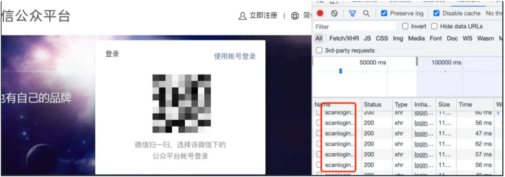
那么问题又来了，有没有更好的解决方案？
有，而且实现起来成本还非常低。
长轮询
我们知道，HTTP 请求发出后，一般会给服务器留一定的时间做响应，比如 3 秒，规定时间内没返回，就认为是超时。如果我们的 HTTP 请求将超时设置的很大，比如 30 秒，在这 30 秒内只要服务器收到了扫码请求，就立马返回给客户端网页。如果超时，那就立马发起下一次请求。
这样就减少了 HTTP 请求的个数，并且由于大部分情况下，用户都会在某个 30 秒的区间内做扫码操作，所以响应也是及时的。
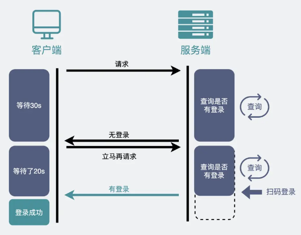
比如，百度云网盘就是这么干的。所以你会发现一扫码，手机上点个确认，电脑端网页就秒跳转，体验很好。
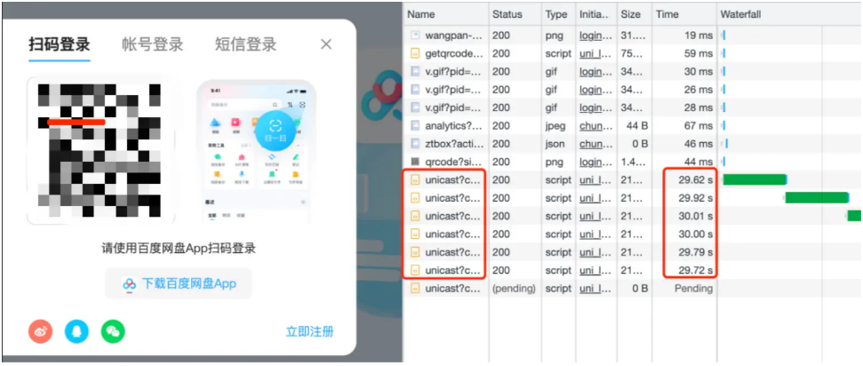
像这种发起一个请求，在较长时间内等待服务器响应的机制，就是所谓的长训轮机制。我们常用的消息队列 RocketMQ 中，消费者去取数据时，也用到了这种方式。
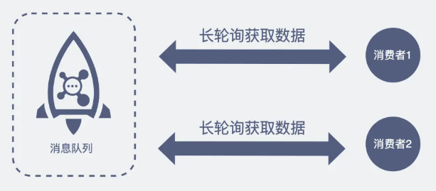
像这种，在用户不感知的情况下，服务器将数据推送给浏览器的技术，就是所谓的服务器推送技术，它还有个毫不沾边的英文名，comet 技术，大家听过就好。
上面提到的两种解决方案（不断轮询和长轮询），本质上，其实还是客户端主动去取数据。
对于像扫码登录这样的简单场景还能用用。但如果是网页游戏呢，游戏一般会有大量的数据需要从服务器主动推送到客户端。
这就得说下 WebSocket 了。
WebSocket 是什么
我们知道 TCP 连接的两端，同一时间里，双方都可以主动向对方发送数据。这就是所谓的全双工。而现在使用最广泛的HTTP/1.1，也是基于TCP协议的，同一时间里，客户端和服务器只能有一方主动发数据，这就是所谓的半双工。
也就是说，好好的全双工 TCP，被 HTTP/1.1 用成了半双工。
为什么？
这是由于 HTTP 协议设计之初，考虑的是看看网页文本的场景，能做到客户端发起请求再由服务器响应，就够了，根本就没考虑网页游戏这种，客户端和服务器之间都要互相主动发大量数据的场景。
所以，为了更好的支持这样的场景，我们需要另外一个基于TCP的新协议。
于是新的应用层协议WebSocket就被设计出来了。
大家别被这个名字给带偏了。虽然名字带了个socket，但其实 socket 和 WebSocket 之间，就跟雷峰和雷峰塔一样，二者接近毫无关系。
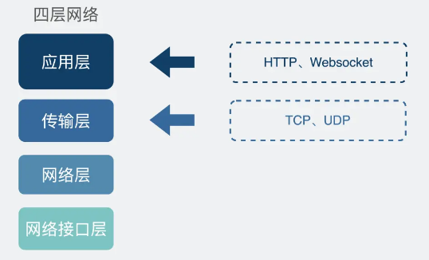
怎么建立 WebSocket 连接？
我们平时刷网页，一般都是在浏览器上刷的，一会刷刷图文，这时候用的是 HTTP 协议，一会打开网页游戏，这时候就得切换成我们新介绍的 WebSocket 协议。为了兼容这些使用场景。浏览器在 TCP 三次握手建立连接之后，都统一使用 HTTP 协议先进行一次通信。
如果此时是普通的 HTTP 请求，那后续双方就还是老样子继续用普通 HTTP 协议进行交互，这点没啥疑问。
如果这时候是想建立 WebSocket 连接，就会在 HTTP 请求里带上一些特殊的header 头，如下：
Connection: Upgrade Upgrade: WebSocket Sec-WebSocket-Key: T2a6wZlAwhgQNqruZ2YUyg==\r\n这些 header 头的意思是，浏览器想升级协议（Connection: Upgrade），并且想升级成 WebSocket 协议（Upgrade: WebSocket）。同时带上一段随机生成的 base64 码（Sec-WebSocket-Key），发给服务器。
如果服务器正好支持升级成 WebSocket 协议，就会走 WebSocket 握手流程，同时根据客户端生成的 base64 码，用某个公开的算法变成另一段字符串，放在 HTTP 响应的 Sec-WebSocket-Accept 头里，同时带上101状态码，发回给浏览器。HTTP 的响应如下：
HTTP/1.1 101 Switching Protocols\r\n Sec-WebSocket-Accept: iBJKv/ALIW2DobfoA4dmr3JHBCY=\r\n Upgrade: WebSocket\r\n Connection: Upgrade\r\nHTTP 状态码=200（正常响应）的情况，大家见得多了。101 确实不常见，它其实是指协议切换。
之后，浏览器也用同样的公开算法将base64码转成另一段字符串，如果这段字符串跟服务器传回来的字符串一致，那验证通过。
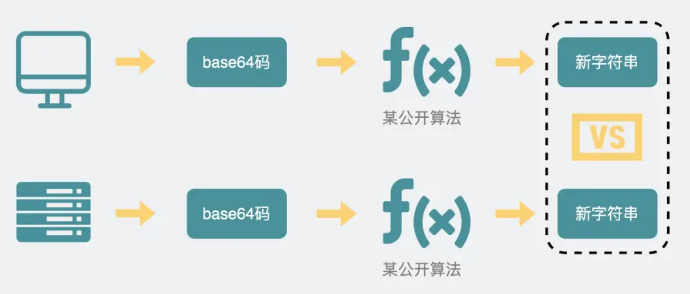
就这样经历了一来一回两次 HTTP 握手，WebSocket 就建立完成了，后续双方就可以使用 webscoket 的数据格式进行通信了。
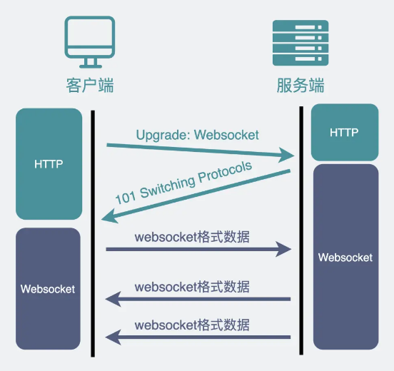
WebSocket抓包
我们可以用 wireshark 抓个包，实际看下数据包的情况。
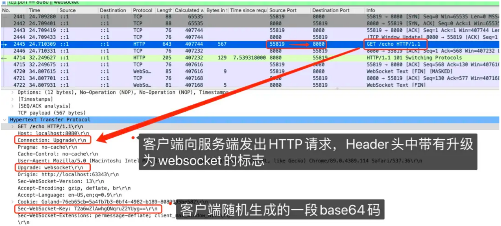
上面这张图，注意画了红框的第 2445 行报文，是 WebSocket 的第一次握手，意思是发起了一次带有特殊 Header 的 HTTP 请求。
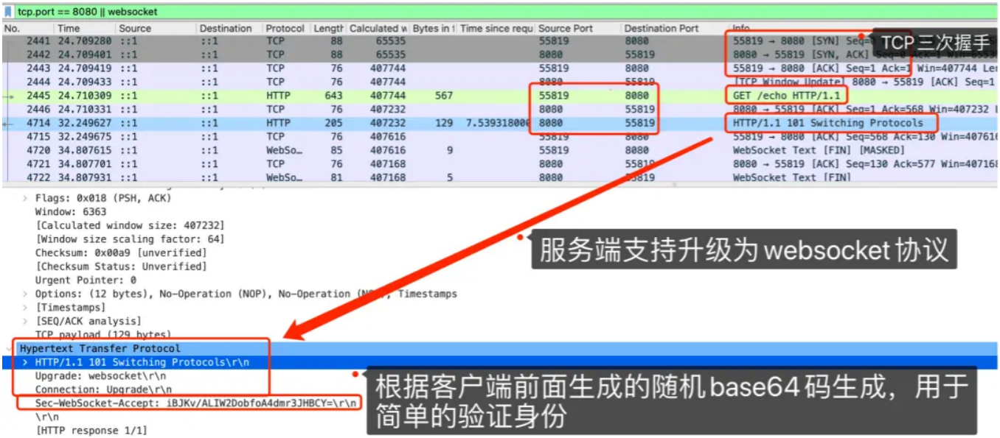
上面这个图里画了红框的 4714 行报文，就是服务器在得到第一次握手后，响应的第二次握手，可以看到这也是个 HTTP 类型的报文，返回的状态码是 101。同时可以看到返回的报文 header 中也带有各种 WebSocket 相关的信息，比如 Sec-WebSocket-Accept。
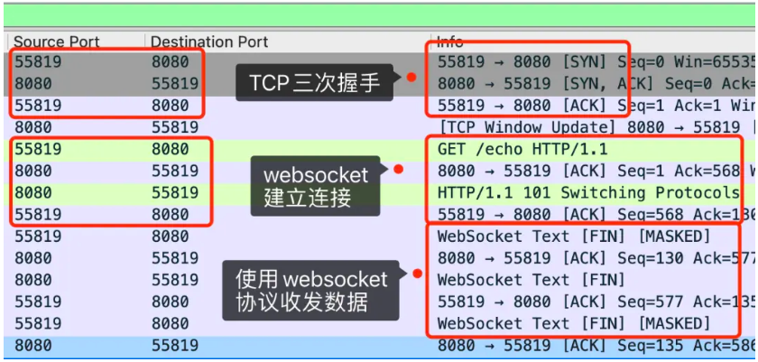
上面这张图就是全貌了，从截图上的注释可以看出，WebSocket 和 HTTP 一样都是基于 TCP 的协议。经历了三次 TCP 握手之后，利用 HTTP 协议升级为 WebSocket 协议。
你在网上可能会看到一种说法："WebSocket 是基于 HTTP 的新协议"，其实这并不对，因为 WebSocket 只有在建立连接时才用到了 HTTP，升级完成之后就跟 HTTP 没有任何关系了。
这就好像你喜欢的女生通过你要到了你大学室友的微信，然后他们自己就聊起来了。你能说这个女生是通过你去跟你室友沟通的吗？不能。你跟 HTTP 一样，都只是个工具人。
总之，WebSocket 和 HTTP 的关系，有点"借壳生蛋"的那意思。
WebSocket 的消息格式
上面提到在完成协议升级之后，两端就会用 webscoket 的数据格式进行通信。数据包在 WebSocket 中被叫做帧，我们来看下它的数据格式长什么样子。
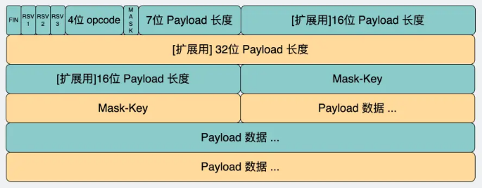
这里面字段很多，但我们只需要关注下面这几个。
opcode 字段
这个是用来标志这是个什么类型的数据帧，比如：- 等于 1 ，是指text类型（string）的数据包；
- 等于 2 ，是二进制数据类型（[]byte）的数据包；
- 等于 8 ，是关闭连接的信号。
payload 字段
存放的是我们真正想要传输的数据的长度，单位是字节。比如你要发送的数据是字符串"111"，那它的长度就是 3。
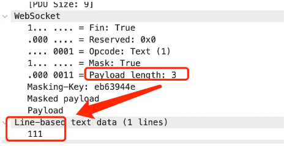
另外，可以看到，我们存放 ** payload 长度的字段有好几个 **，我们既可以用最前面的 7bit, 也可以用后面的 7+16bit 或 7+64bit。
那么问题就来了。
我们知道，在数据层面，大家都是 01 二进制流。我怎么知道什么情况下应该读 7 bit，什么情况下应该读 7+16bit 呢？
WebSocket 会用最开始的 7bit 做标志位。不管接下来的数据有多大，都先读最先的 7 个 bit，根据它的取值决定还要不要再读个 16bit 或 64bit。
- 如果最开始的 7bit 的值是 0~125，那么它就表示了 payload 全部长度，只读最开始的7个 bit 就完事了。
- 如果是 126（0x7E），那它表示 payload 的长度范围在 126~65535 之间，接下来还需要再读 16bit。这 16bit 会包含 payload 的真实长度。
- 如果是 127（0x7F）。那它表示 payload 的长度范围>=65536，接下来还需要再读 64bit。这 64bit 会包含 payload 的长度。这能放 2 的 64 次方 byte 的数据，换算一下好多个 TB，肯定够用了。
payload data字段
这里存放的就是真正要传输的数据，在知道了上面的payload长度后，就可以根据这个值去截取对应的数据。大家有没有发现一个小细节，WebSocket 的数据格式也是
数据头（内含payload长度） + payload data 的形式。这是因为 TCP 协议本身就是全双工，但直接使用纯裸TCP去传输数据，会有粘包的"问题"。为了解决这个问题，上层协议一般会用消息头+消息体的格式去重新包装要发的数据。
而消息头里一般含有消息体的长度，通过这个长度可以去截取真正的消息体。
HTTP 协议和大部分 RPC 协议，以及我们今天介绍的WebSocket协议，都是这样设计的。
WebSocket 的使用场景
WebSocket 完美继承了 TCP 协议的全双工能力，并且还贴心的提供了解决粘包的方案。它适用于需要服务器和客户端（浏览器）频繁交互的大部分场景，比如网页/小程序游戏，网页聊天室，以及一些类似飞书这样的网页协同办公软件。
回到文章开头的问题，在使用 WebSocket 协议的网页游戏里，怪物移动以及攻击玩家的行为是服务器逻辑产生的，对玩家产生的伤害等数据，都需要由服务器主动发送给客户端，客户端获得数据后展示对应的效果。
总结
TCP 协议本身是全双工的，但我们最常用的 HTTP/1.1，虽然是基于 TCP 的协议，但它是半双工的，对于大部分需要服务器主动推送数据到客户端的场景，都不太友好，因此我们需要使用支持全双工的 WebSocket 协议。在 HTTP/1.1 里，只要客户端不问，服务端就不答。基于这样的特点，对于登录页面这样的简单场景，可以使用定时轮询或者长轮询的方式实现服务器推送(comet)的效果。
对于客户端和服务端之间需要频繁交互的复杂场景，比如网页游戏，都可以考虑使用 WebSocket 协议。
WebSocket 和 socket 几乎没有任何关系，只是叫法相似。
正因为各个浏览器都支持 HTTP协 议，所以 WebSocket 会先利用HTTP协议加上一些特殊的 header 头进行握手升级操作，升级成功后就跟 HTTP 没有任何关系了，之后就用 WebSocket 的数据格式进行收发数据。
关注公众号「站长严长生」，在手机上阅读所有教程，随时随地都能学习。内含一款搜索神器，免费下载全网书籍和视频。

微信扫码关注公众号